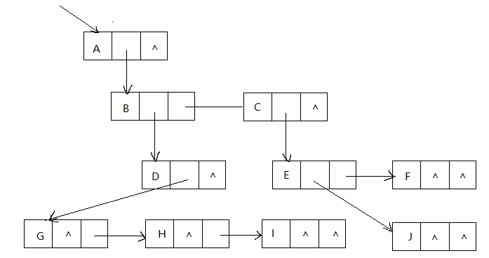
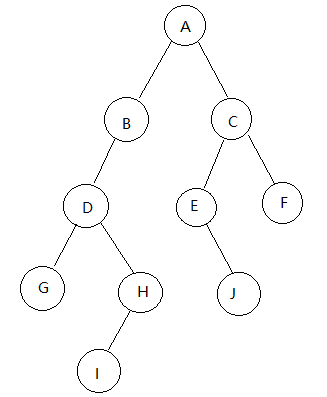
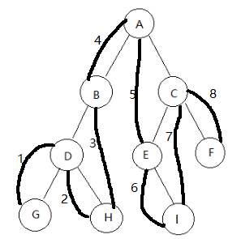

原文连接:https://www.cnblogs.com/Joey777210/p/11985685.html
前面我们已经提到了线性表，栈，队列等数据结构，他们有一个共同的特性，就是结构中每一个元素都是一对一的，可是在现实中，还有很多一对多的情况需要处理，所以我们需要研究这种一对多的数据结构 —— 树，并运用它的特性来解决我们在编程中遇到的问题。
一、树的定义
1，树Tree是n(n >= 0) 个结点的有限集。n = 0时称为空树 在任意一棵非空的树中，
（1）有且仅有一个特定的根结点
（2）当n>1时，其余节点可分为m（m > 0）个互不相交的有限集T1,T2,.....,Tm，其中每一个集合又是一棵树，并且称为根的子树。如下图所示
注意：1，根节点是唯一的 2，子树的个数没有限制，但它们一定是互不相交的
2，结点分类
（1）结点包含一个数据元素以及若干指向其子树的分支。
（2）结点拥有的子树数量称为结点的度
（3）度为0的结点称为叶节点或终端节点
（4）度不为0的结点称为非终端结点或分支结点
（5）一棵树的度是树内各节点的度的最大值
3，结点间的关系
结点的子树的根称为该结点的孩子，该结点称为孩子的双亲。同一个双亲的孩子之间互称兄弟。结点的祖先是从根到该结点所经分支上的所有结点。反之，以某结点为根的子树中的任一结点都成为该结点的子孙。
4，树的其他相关概念
（1）结点的层次从根开始定义，根为第一层，根的孩子为第二层，以此类推。
（2）其双亲在同一层的结点互为表兄弟
（3）树中结点的最大层次称为树的深度或高度
（4）如果将树中结点的各子树看成从左至右是有次序的，不能互换的，则称该树为有序树，否则称为无序树。
（5）森林是m（m >= 0）棵互不相交的树的集合
二、树的存储结构
我们介绍三种不同的表示方法：双亲表示法、孩子表示法、孩子兄弟表示法。
1，双亲表示法
结点可能没有孩子，但一定有双亲。假设我们以一组连续空间存储树的结点，同时在每个结点中，附设一个指示器指示其双亲结点在数组中的位置。由于根节点没有双亲，所以我们约定根节点的位置域设为-1.下面是示例

| 下标 | data | parent |
| 0 | A | -1 |
| 1 | B | 0 |
| 2 | C | 0 |
| 3 | D | 1 |
| 4 | E | 2 |
| 5 | F | 2 |
| 6 | G | 3 |
| 7 | H | 3 |
| 8 | I | 3 |
| 9 | J | 4 |
这样的存储结构，我们可以根据结点的parent指针很容易找到双亲，时间复杂度O(1)。但如果我们要知道结点的孩子呢？对不起，请遍历整个结构才行。那么能不能改进一下呢？
我们增加一个结点最左边孩子的域，不妨叫他长子域，这样很容易得到结点的孩子。如果没有孩子的叶结点，这个长子域就设为-1，如下表
| 下标 | data | parent | firstchild |
| 0 | A | -1 | 1 |
| 1 | B | 0 | 3 |
| 2 | C | 0 | 4 |
| 3 | D | 1 | 6 |
| 4 | E | 2 | 9 |
| 5 | F | 2 | -1 |
| 6 | G | 3 | -1 |
| 7 | H | 3 | -1 |
| 8 | I | 3 | -1 |
| 9 | J | 4 | -1 |
另外一个问题场景，我们关注各兄弟之间的关系，双亲表示法无法体现这样的关系，怎么办呢？可以增加一个右兄弟域来体现兄弟关系，也就是说，每一个结点如果它存在右兄弟，就记录下右兄弟的下标，同样的如果右兄弟不存在，就赋值为-1.
| 下标 | data | parent | rightsib |
| 0 | A | -1 | -1 |
| 1 | B | 0 | 2 |
| 2 | C | 0 | -1 |
| 3 | D | 1 | -1 |
| 4 | E | 2 | 5 |
| 5 | F | 2 | -1 |
| 6 | G | 3 | 7 |
| 7 | H | 3 | 8 |
| 8 | I | 3 | -1 |
| 9 | J | 4 | -1 |
如果节点的孩子很多，超过了两个，我们又关注节点的双亲，又关注节点的孩子，还关注结点的兄弟，而且还对时间遍历要求高，那么我们可以把此结构扩展为有各个域都包含。存储结构的设计是一个非常灵活的过程，一个存储结构设计的是否合理，取决于基于改存储结构的运算是否适合、是否方便，时间复杂度好不好等。
2，孩子表示法
现在我们换一种不同的考虑方法。由于树中每个结点可能有多棵子树，可以考虑用多重链表即每个节点有多个指针域，其中每个指针指向一棵子树的根节点，我们把这种方法叫做多重链表表示法。
不过，树的每个结点的度，也就是孩子的个数是不同的，所以设计两种方案来解决。
方案一
第一种方案是指针域的个数等于树的度。
对于上面作为示例的树来说，度是3
这种方法对于树中结点度相差很大时，是浪费空间的。
方案二
每个结点指针域的个数等于该结点的度，专门取宇哥位置来存储结点指针域的个数，结构如下
这种方案克服了空间浪费的缺陷，但由于每个结点的链表不同，加上要维护结点的度的值，在运算上会有时间上的损耗。
为了同时满足空间不浪费，又使节点结构相同，我们引出 —— 孩子表示法。 把每个节点的孩子结点排列起来，以单链表作为存储结构，则n个结点有n个孩子链表，如果是叶子结点则此单链表为空。然后n个头指针又组成一个线性表，采用顺序存储结构，存放进一个一维数组。为了快速找到某个结点的双亲，我们把双亲表示法和孩子表示法综合一下如下图。
这种方法叫做双亲孩子表示法，是对孩子表示法的改进。结构定义如下
public class ParentChildDemo <T>{
PCTBox[] nodes; //表头数组
int r; //根节点的角标
int n; //总结点树
int parent; //双亲结点的角标，根节点为-1
private class PCTBox<T>{
T data;
ChildNode firstchild;
}
private class ChildNode{
int child; //存储本结点在表头数组中的下标
ChildNode next;
}
}
3，孩子兄弟表示法
任意一棵树，它的结点的第一个孩子如果存在就是唯一的，它的右兄弟如果存在也是唯一的。因此我们设置两个指针，分别指向该结点的第一个孩子和此节点的右兄弟。

如果有必要完全可以再增加一个parent指针域来解决快速查找双亲的问题。这个表示法最大的好处就是它把一棵复杂的树变成了一棵二叉树。
三、二叉树 重点来了！！
对于在某个阶段都是两种结果的情形，比如开和关，0和1，真和假，上和下，正与反等，都适合用二叉树来表示
1，二叉树的定义
二叉树 Binary Tree 是n个结点的有限集合，该集合或者为空集，或者由一个根节点和两棵互不相交的、分别称为根节点的左子树和右子树的二叉树组成。形如下图

2,二叉树的特点：
（1）每个结点最多有两棵子树
（2）左子树和右子树有顺序，不能颠倒
（3）如果某结点只有一棵子树，那也要区分它是左子树还是右子树。
3，特殊二叉树
（1）斜树。所有结点都只有左子树的二叉树叫做左斜树。所有结点都是只有右子树的二叉树叫右斜树。
（2）满二叉树。 所有分支结点都存在左子树和右子树，并且所有叶子都在同一层上，这样的二叉树称为满二叉树。
（3）完全二叉树。对一棵具有n个结点的二叉树按照层序编号，如果编号为i的结点与同样深度的满二叉树中编号为i的结点在二叉树中的位置完全相同，则这棵二叉树称为完全二叉树。简单来说就是最后一个结点的之前结点是按照满来排列的，没有空档。矮的子树一定是右子树，且比左子树最多矮一层。最下层的叶子一定集中在左部连续位置。同样结点数的二叉树，完全二叉树的深度最小。
4，二叉树的性质
（1）在二叉树的第i层上至多有2i-1个结点。
（2）深度为k的二叉树至多有2k-1个结点
（3）对任何一棵二叉树T，如果其终端结点数为n0，度为2的结点数为n2，则n0=n2+1
（4）具有n个结点的完全二叉树的深度为。表示不大于x的最大整数。
（5）如果对一棵有n个结点的完全二叉树的结点按层序编号，对任意结点有：
如果i=1，则i是二叉树的根；如果i>1，则其双亲是
如果2i>n，则结点i无左孩子（结点i是叶子结点）；否则其左孩子是结点2i
如果2i+1>n，则结点i无右孩子；否则其右孩子是2i+1
四、二叉树的存储结构
1，顺序存储结构
二叉树是一种特殊的树，用顺序存储结构可以实现。用一维数组存储二叉树中的结点，并且节点的存储位置，也就是数组的下标，要能体现结点之间的逻辑关系。举例如下
将这棵树存入数组中（打叉的元素表示不存在）如下
这种方式如果遇上右斜树，那么会浪费很多空间，所以顺序存储方式一般只用于完全二叉树。
2，二叉链表
二叉树每个结点最多有两个孩子，所以为它设计一个数据域和两个指针域，我们称为二叉链表
public class BiTNode<T> {
T data;
BiTNode lchild;
BiTNode rchild;
}五、遍历二叉树
1，二叉树的遍历是指从根节点出发，按照某种次序依次访问二叉树中的所有结点，使得每个结点被访问一次且仅被访问一次。
二叉树遍历不同于线性结构，在一个结点访问完成后面临多个选择。
2，二叉树遍历方法
（1）前序遍历
前序遍历、中序遍历等遍历名称的“前” “中”是指双亲结点和子结点访问时双亲结点在前被访问还是在中间被访问
若树为空，则空操作返回；先访问根节点，然后前序遍历左子树，再前序遍历右子树。（先父后子，先左后右，根左右）
结果是ABDGHCEIF
（2）中序遍历
从根结点开始（但并不先访问根结点），中序遍历根节点的左子树，然后访问根节点，最后中序遍历右子树（左根右）

结果是GDHBAEICF
（3）后序遍历
若空，返回空操作；否则从左到右先叶子后结点的方式遍历访问左右子树，然后访问根节点。（左右根）
结果：GHDBIEFCA
（4）层序遍历
若空，则空操作返回，否则从树的第一层，也就是根节点开始访问，从上而下逐层遍历，在同一层中，按从左到右的顺序对结点逐个访问
结果：ABCDEFGHI
研究这些遍历方法其实就是在把树中的结点变成有意义的线性序列，通过不同的遍历方法提供了对结点的不同处理方式。
首先是结点定义
public static class Node<T>{
private T data;
private Node lChild;
private Node rChild;
public Node(T data) {
this.data = data;
}
public void setNode(T data){
this.data = data;
}
}
/**
* 前序遍历的递归写法
*/
public void PreOrderTraverse1(Node root){
if (root == null)
return;
System.out.println(root.data);
PreOrderTraverse1(root.lChild);
PreOrderTraverse1(root.rChild);
}
/**
* 前序遍历的非递归写法
* 递归转成栈
*/
public void PreOrderTraverse2(Node root){
ArrayStack<Node> a = new ArrayStack<>();
while (root != null || !a.isEmpty()){
while (root != null){
System.out.println(root.data);
a.push(root);
root = root.lChild;
}
if (!a.isEmpty()){
root = a.pop();
root = root.rChild;
}
}
}
/**
* 中序遍历的递归写法
*/
public void InOrderTraverse1(Node root){
Node node = root;
if (node == null){
return;
}
InOrderTraverse1(node.lChild);
System.out.println(node.data);
InOrderTraverse1(node.rChild);
}
/**
* 中序遍历的非递归写法
*/
public void InOrderTraverse2(Node root){
ArrayStack<Node> a = new ArrayStack<>();
while (root != null || !a.isEmpty()){
while (root.lChild != null){
a.push(root);
root = root.lChild;
}
if (!a.isEmpty()){
root = a.pop();
System.out.println(root.data);
root = root.rChild;
}
}
}
/**
* 后序遍历的递归写法
*/
public void PostOrderTraverse1(Node root){
if (root == null){
return;
}
PostOrderTraverse1(root.lChild);
PostOrderTraverse1(root.rChild);
System.out.println(root.data);
}
/**
* 后序遍历的非递归写法 —— 双栈法
* 将前序遍历的中左右，调换变成左右中
*
*/
public void PostOrderTraverse2(Node root){
ArrayStack<Node> a1 = new ArrayStack<>();
ArrayStack<Node> a2 = new ArrayStack<>();
Node r = root;
while (r != null || !a1.isEmpty()){
while (r != null){
a1.push(r);
a2.push(r);
r = r.rChild;
}
if (!a1.isEmpty()){
r = a1.pop();
r = r.lChild;
}
}
while (!a2.isEmpty()){
r = a2.pop();
System.out.println(r.data);
}
}
/**
* 利用队列实现层序遍历(可以不用优先队列，这个优先队列Demo是我前面随笔写的，顺便拿来用用)
*/
public void LevelOrderTraverse(Node root) throws Exception {
PriorityQueueDemo<Node> p = new PriorityQueueDemo<>(10);
Node t;
p.add(root);
while (p.size() != 0){
t = p.poll();
System.out.println(t.data);
if (t.lChild != null) p.add(t.lChild);
if (t.rChild != null) p.add(t.rChild);
}
}
二叉树遍历的两个性质： 已知前序遍历序列和中序遍历序列，可以唯一确定一棵二叉树
已知后序遍历序列和中序遍历序列，可以唯一确定一棵二叉树
六、二叉树的建立
我们要建立一棵如下左图的树，为了能让每个结点确认是否有左右孩子，我们对它进行了扩展，变成如下右图的样子。我们称右图为左图的扩展二叉树。扩展二叉树可以做到一个遍历序列就确定一棵二叉树。
上右图的前序遍历结果为 AB#D##C##，我们把这样的遍历结果输入下面程序中就可以建立左图二叉树了
private Object[] results;
public BiTree(Object[] arr){
this.results = arr;
}
private static int index = 0;
public Node<T> buildBiTree(){
if (index >= results.length || results[index].equals('#')){
index++;
return null;
}
Node<T> node = new Node<T>((T)results[index++]);
node.lChild = buildBiTree();
node.rChild = buildBiTree();
return node;
}
七、线索二叉树
1，我们来看如下的链式二叉树
里面右许多的空指针^没有被利用起来，我们来计算一下，一个n个结点的二叉树，有2n个指针域，n-1条分支线路，也就是说有2n-n+1=n+1个空指针域在浪费着。
另外，我们在遍历时，知道上图的中序遍历结果是HDIBJEAFCG，此时我们可以知道比如D的前驱是H，后继是I，但我们在没有遍历的情况下是不知道的。综合以上两点，我们可以利用那些空地址，存放结点在某种遍历次序下的前驱和后继结点的位置。
我们把这种指向前驱和后继的指针称为线索，加上线索的二叉链表称为线索链表，相应的二叉树称为线索二叉树（Threaded Binary Tree）
我们让所有空闲的左指针指向前驱，所有空闲的右指针指向后继；并且增加ltag域和rtag域区分左右指针指向的到底是孩子还是前驱后继。
其中 ltag和rtag为0时指向的是左孩子或右孩子，为1时指向的是前驱或后继。
2，线索二叉树的实现
因为前驱和后继只有在遍历过程中才能拿到，所以实现线索二叉树的过程实质上就是在遍历过程中修改空指针的过程。
private Node pre;//根节点的pre是head,head的rtag = 1public void Threading(Node root) {
Node r = root;
if (root == null){
return;
}else {
Threading(r.lChild);
if (r.lChild == null){
r.ltag = 1;
r.lChild = pre;
}
if ( pre != null&&pre.rChild == null){
pre.rtag = 1;
pre.rChild = r;
}
pre = r;
Threading(r.rChild);
}
}
这个递归实现只不过是把中序遍历中访问结点数据的代码改成了修改指针的代码。
有了前驱后继，我们就可以通过二叉线索树来遍历二叉树了。对于中序遍历来说，先查找线索链表的第一个节点，也就是最左方向上的最后一个节点，然后如果有右线索先寻找后继节点，查找到断线索（有右节点啦）就往下找一个右节点，继续这样摸下去，其实说到底就是有线索先按线索找（注意线索上的节点是需要访问的），等到线索断了就往下找右孩子节点（找到右孩子结点后按照中序遍历先左孩子后双亲结点再右孩子的顺序遍历该子树）。
/**
* 按照二叉线索树的线索遍历
*/
public void InOrderTraverse_Threaded(Node root){
Node r = root;
while (r != null) {
while (r.lChild != null && r.ltag == 0) {
r = r.lChild;
}
System.out.println(r.data);
while (r.rtag == 1) {
r = r.rChild;
System.out.println(r.data);
}
r = r.rChild;
}
}可以看到如果所用的二叉树需要经常遍历或者需要某种遍历序列中的前驱和后继来查找结点，那么采用线索二叉链表的存储结构是非常不错的选择。
八、树，森林与二叉树的转换。
1，树转化为二叉树
步骤： （1）加线。在所有的兄弟结点之间加一条线
（2）去线。对树中的每个结点，只保留它与第一个孩子结点的连线，删除它与其他孩子结点的连线。
（3）层次调整。以树的根节点为轴线，将整棵树顺时针旋转一定的角度，使之层次分明。 注：上面提到的第一个孩子是二叉树的左孩子，第一个孩子的兄弟转换过来的是二叉树的右孩子。
2，森林转化为二叉树
把森林中的每一棵树认为是兄弟，按照上面兄弟的处理办法来操作。步骤如下：
（1）把每棵树转化成二叉树
（2）第一棵树不动，从第二棵二叉树开始，依次把后一棵二叉树的根节点作为前一棵二叉树的根节点的右孩子，用线连起来。当所有二叉树都连接起来之后就得到了森林转化来的二叉树。
3，二叉树转化为树
把树转二叉树的过程反过来做，步骤如下：
（1）加线。如果某结点的左孩子存在，则将这个左孩子的右孩子结点、右孩子的右孩子结点、…… 。总之就是将左孩子的n个右孩子结点都作为此结点的孩子连接起来。
（2）去线。删除原二叉树中所有结点与其右孩子的连线
（3）层次调整，使之结构层次分明。
4，二叉树转化为森林
看一棵二叉树能转换成一棵树还是森林，标准就是要看这棵二叉树的根节点有没有右孩子，有就是森林，没有就是二叉树。
二叉树转森林的步骤如下：
（1）从根节点开始，若右孩子存在，则把与右孩子的连线断掉，知道所有的右孩子连线都删除。
（2）再将每棵分离出来的二叉树转换为树即可
5，树与森林的遍历
（1）树的遍历方式分两种： 第一种是先根遍历树。即先访问树的根结点，再依次访问根的每棵子树。
第二种是后根遍历，即先依次后根遍历每棵子树，再访问根节点。例如上面图中的树，先根遍历结果为ABEFCDG，后根遍历结果为EFBCGDA
（2）森林的遍历也分为两种：
前序遍历：先访问森林中第一棵树的根结点，然后再依次先根遍历根的每棵子树，再依次用同样的方式遍历除去第一棵树的剩余树构成的森林。如上面图中的森林结果为ABCDEFGHJI
后序遍历：先访问森林中的第一棵树，后根遍历的方式遍历每棵树，然后再访问根节点，再依次用同样的方式遍历去除第一棵树的剩余树构成的森林，结果为BCDAFEJHIG
我们分析发现，森林的前序遍历和二叉树的前序遍历结果相同，森林的后序遍历和二叉树的中序遍历结果相同。也就是说当以二叉链表作为树的存储结构时，树的遍历完全可以借用二叉树的遍历算法来实现。
九、赫夫曼树及其应用
1，赫夫曼树
从树中一个结点到另一个结点之间的分支构成两个结点之间的路径，路径上的分支数目称作路径长度。树的路径长度就是从树根到每一结点的路径长度之和。
如果考虑带权的结点，结点的带权路径长度就是从该结点到树根之间的路径长度与结点上权的乘积。带权路径长度WPL最小的二叉树称作赫夫曼树。
例如，给定
| 分数 | 0~59 | 60~69 | 70~79 | 80~89 | 90~100 |
| 所占比例% | 5 | 15 | 40 | 30 | 10 |
步骤：（1）把结点按权值从小到大排成一个有序序列 A5,E10,B15,D30,C40
（2）取前两个最小权值的结点作为新结点N1的两个子结点，小的为左孩子
(3)将N1替换A与E插入到序列中，即N1 15，B15,D30,C40，重复（2）
(4)反复重复（2），（3）步骤，完成建立
通过上面的步骤，我们可以得出构造赫夫曼树的赫夫曼算法描述：
1，根据给定的n个权值构成n棵二叉树的集合F={T1,T2,...,Tn}，其中每棵二叉树Ti中只有一个带权为wi的根节点，其左右子树为空。
2，在F中选取两棵根节点的权值最小的树作为左右子树构造一棵新二叉树，并且置新二叉树的根节点的权值为左右子树上根节点的权值之和。
3，在F中删除这两棵树，同时将新得到的二叉树加入F
4，重复2，3直到F只含一棵树为止。这棵树便是赫夫曼树。
代码如下：
//结点结构
import java.util.Comparator;
public class TNode<T> implements Comparable{
private T data;
private int weight;
private TNode lChild;
private TNode rChild;
private Comparator comparator;
public TNode(T data, int weight){
this.data = data;
this.weight = weight;
this.lChild = null;
this.rChild = null;
}
public TNode(T data, int weight, TNode lChild, TNode rChild){
this(data, weight);
this.lChild = lChild;
this.rChild = rChild;
}
public Comparator getComparator(){
return this.comparator;
}
public void setlChild(TNode node){
this.lChild = node;
}
public void setrChild(TNode node){
this.rChild = node;
}
public int getWeight(){
return this.weight;
}
public T getData(){
return data;
}
public TNode getlChild(){
return lChild;
}
public TNode getrChild(){
return rChild;
}
@Override
public int compareTo(Object o) {
return ((TNode)o).weight - this.weight;
}
}
class TNodeComparator implements Comparator{
@Override
public int compare(Object o1, Object o2) {
return ((TNode)o1).getWeight() - ((TNode)o2).getWeight();
}
}//创建霍夫曼树
import java.util.LinkedList;
public class HuffmanTree<T> {
LinkedList<TNode<T>> tnodes = new LinkedList<>();
public HuffmanTree(LinkedList<TNode<T>> tnodes){
this.tnodes = tnodes;
}
public TNode<T> buildHuffmanTree(){
tnodes.sort(new TNodeComparator());
while (tnodes.size() > 1) {
TNode<T> newTNode = buildBiTree(tnodes.remove(0), tnodes.remove(0));
tnodes.add(0, newTNode);
tnodes.sort(new TNodeComparator());
}
return tnodes.remove(0);
}
public void PreOrderTraverse(TNode tNode){
if (tNode == null){
return;
}else {
T tdata = (T) tNode.getData();
if (tdata != null){
System.out.println(tdata);
}
PreOrderTraverse(tNode.getlChild());
PreOrderTraverse(tNode.getrChild());
}
}
private TNode buildBiTree(TNode<T> tNode, TNode<T> tNode1) {
TNode<T> t1 = new TNode<T>(null, tNode.getWeight() + tNode1.getWeight(), tNode, tNode1);
return t1;
}
}2，赫夫曼树的应用 —— 赫夫曼编码
当年赫夫曼研究赫夫曼树，就是为了解决远距离通信中数据传输的最优化问题。比如我们有一段文字内容为“BADCADFEED”要发送给别人，用二进制是显然的方法。我们这段文字中包含ABCDEF六种字母，我们就可以相应的编码为
| A | B | C | D | E | F |
| 000 | 001 | 010 | 011 | 100 | 101 |
传输时就按照上面编码的对应二进制来传输，解码时也按照三位一分隔来解码。假设我们有很长的一段字符，六个字母的频率为A 27, B 8, C 15, D 15, E 30 , F 5，合起来正好是100%，我们就可以用赫夫曼树来规划它们。
我们对左图的赫夫曼树的权值左分支改为0，右分支改为1，这样就可以将六个叶子结点按照路径重新编码
| A | B | C | D | E | F |
| 01 | 1001 | 101 | 00 | 11 | 1000 |
这样压缩了许多传输成本。当我们接收到传输过来的新编码时，要按照约定好的赫夫曼树来解码。因为长度不均，所以必须任意字符的编码都不是另一个字符编码的前缀，这叫做前缀编码，而赫夫曼树的编码刚好满足这种条件。
赫夫曼树时前缀编码，且是最优前缀编码。下面是严蔚敏老师数据结构中的证明

总结：
本章重点是二叉树部分的前序、中序、后序以及层序遍历，代码要会写，递归方法代码优雅但容易栈溢出，非递归方法不易栈溢出但代码要比较难理解。线索二叉树的构造和遍历也要理解。